Day 3.
2일차가 한 장의 그림이었다면 3일차는 여러 문서를 한꺼번에 다루는 시간임. 문서가 내 손에 없다는 것이 앞의 이틀과 다른 점임.
| 교시 | 내용 | 형태 | 산출물 |
|---|---|---|---|
| 1 | 특허 검색과 청구항 구성요소 분해 | 강의+실습 | 특허 3건 목록 + 구성요소 대비표 |
| 2 | 논문의 실험 조건·결과 추출 | 실습 중심 | 논문 3편 조건·결과 비교표 |
| 3 | 여러 자료를 한 노트북에 모아 출처와 함께 | 실습 중심 | 노트북 1개 + 인용 추적 결과 |
| 4 | 시험 데이터 정리와 그래프 자동 생성 | 실습 중심 | 정제 데이터 + 그래프 이미지 2종 |
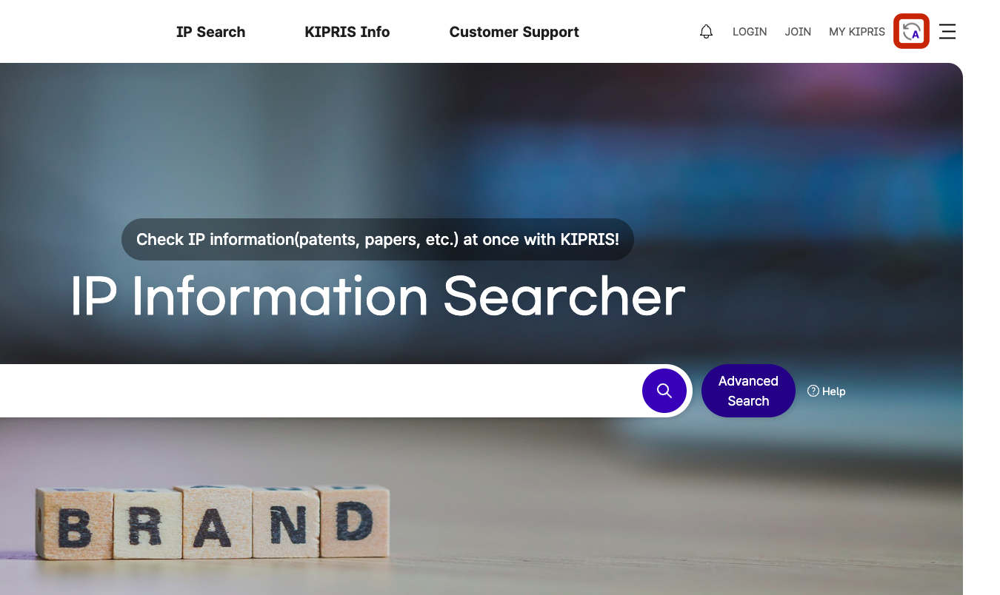
kipris.or.kr → 한국어 전환 → patents.google.com → scholar.google.com → notebook.google.com특허 검색은 찾는 것보다 거르는 것이 일임. 키워드로 검색하면 수십에서 수백 건이 나오고, 그중 읽어야 할 5건을 고르는 데 시간이 듦.
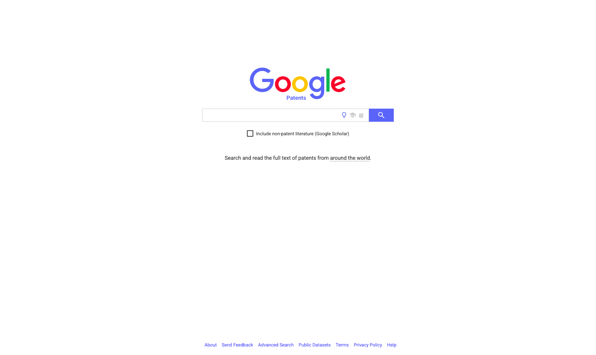
F16C33/04, 건설기계 핀조인트 부시는 E02F9/006 에 모여 있어 코드 하나로 결과가 크게 줄어듦.F16C 는 「축·베어링」 묶음임. 유럽·미국 특허청이 함께 관리하는 국제 공통 코드라 사이트를 옮겨도 같은 코드가 통함.아래는 특허 검색 결과 목록이다. 내 관심 기술은 [기술 설명 2줄]이다.
각 건을 관련성 상·중·하로 분류하고 이유를 한 줄로 달아라.
'상'으로 분류한 건은 무엇이 겹치는지 구체적으로 적어라.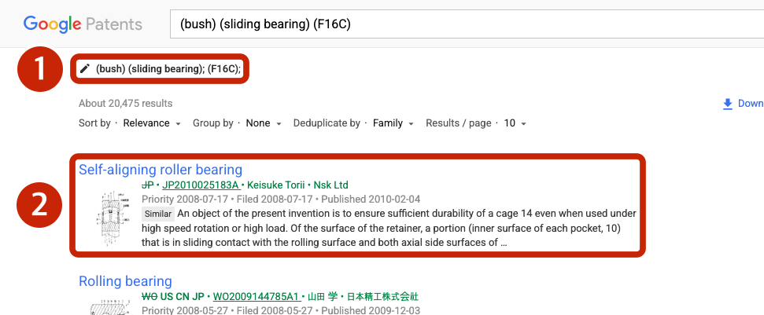
F16C 가 적용된 분류임. 분류를 더하면 결과가 줄고, 빼면 늘어남 — 깔때기 셋째 단을 화면에서 조작하는 자리임.robots.txt 장에서 봄.| 동작 | 무로그인 | 비고 |
|---|---|---|
| 검색·목록 조회 | 가능 | 3일차 실습은 전부 여기서 끝남 |
| 서지·초록 열람 | 가능 | 청구항 원문도 열림 |
| 공보 PDF 내려받기 | 대체로 | 일부 문서는 로그인 요구 |
| 검색식 저장·알림 설정 | 불가 | 계정이 필요함 — 3일차엔 안 씀 |
| 대량 내려받기(CSV 일괄) | 불가 | API 경로를 봐야 함 |
아래 청구항을 구성요소 단위로 분해해
번호를 붙여 나열하라.
각 구성요소가 필수인지,
종속항에서 한정되는 것인지 구분하라.
원문에 없는 요소를 추가하지 마라.| # | 구성요소 | 구분 | 원문 표현 |
|---|---|---|---|
| 1 | 외측 슬리브 | 필수 | 「외측 슬리브와」 |
| 2 | 내측 라이너 | 필수 | 「내측 라이너 및」 |
| 3 | 완충층 | 필수 | 「그 사이의 완충층」 |
| 4 | 두께 0.3~1.2 | 종속 한정 | 제2항 |
robots.txt 판정이 둘 다에 걸림.robots.txt 와 약관을 엶robots.txt 는 사이트주소/robots.txt 로 누구나 열 수 있는 공개 선언문임. Disallow: / 한 줄이면 전체 금지이고, 경로별로 허용·금지가 갈리기도 함. 다음 장이 실물임.robots.txt 는 최소 조건이지 허가증이 아님.robots.txt — Disallow: / 한 줄이 전부임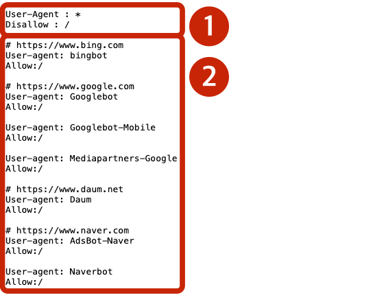
User-Agent: * 는 「모든 프로그램에게」이고 그 아래 Disallow: / 는 「전체 경로 금지」임. 이 두 줄로 KIPRIS 는 자동 수집 전면 금지를 선언함.| 대상 | robots.txt 판정 | 이 과정에서의 취급 |
|---|---|---|
| 🚫 KIPRIS | User-Agent: * / Disallow: / — 전면 금지 | 손으로 검색 · KIPRIS Plus OpenAPI |
| 🚫 Google Patents 검색 | Disallow: /* — /patent/ 상세만 허용 | 결과 수집 금지 · 개별 문서 열람은 허용 |
| 🚫 Google Scholar | /search · /scholar 금지 | 3-2 에서도 손으로 검색 |
| ✅ 자사 사이트 | 자사 소유 | 회사로 돌아가서 쓸 1순위 |
| ✅ 공개 샘플 HTML | 강사 배포본 — 제약 없음 | 기법 실습·시연의 대상 |
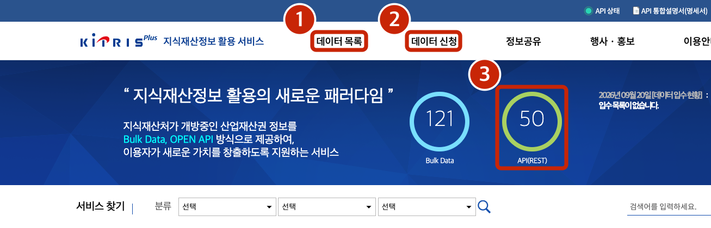
F16C 로 좁힘 → 목록 넣고 상·중·하 분류아래는 특허 검색 결과 목록이다. 내 관심 기술은 건설기계용 미끄럼 베어링 부시다.
각 건을 관련성 상·중·하로 분류하고 이유를 한 줄로 달아라.
'상'으로 분류한 건은 무엇이 겹치는지 구체적으로 적어라.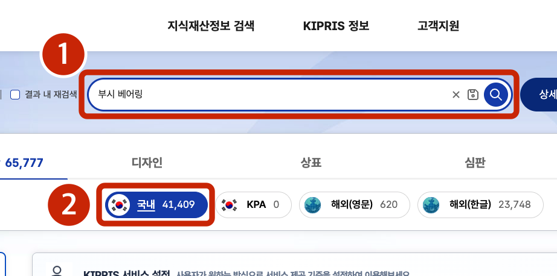
3-1_대비표.md)아래 청구항을 구성요소 단위로 분해해 번호를 붙여 나열하라.
각 구성요소가 필수인지, 종속항에서 한정되는 것인지 구분하라.
각 구성요소 옆에 원문의 해당 어구를 그대로 옮겨 적어라.
원문에 없는 요소를 추가하지 마라.robots.txt 를 열어 판정논문 전체를 읽을 시간은 없음. R&D 실무에서 필요한 것은 대개 셋임 — 어떤 조건에서 했는가, 어떤 결과가 나왔는가, 우리 조건과 무엇이 다른가.
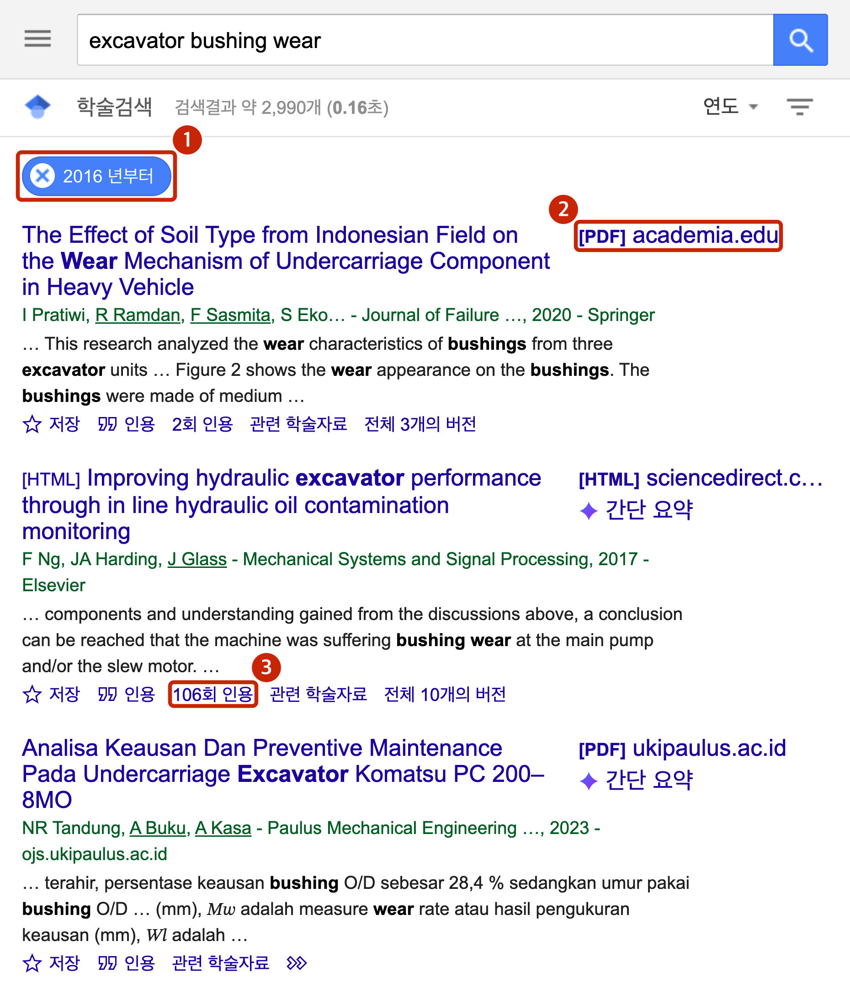
[PDF] 가 붙은 게 공개본임.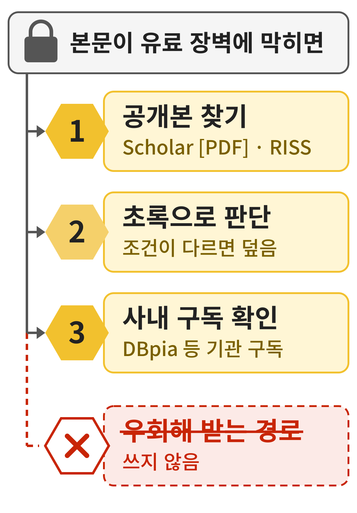
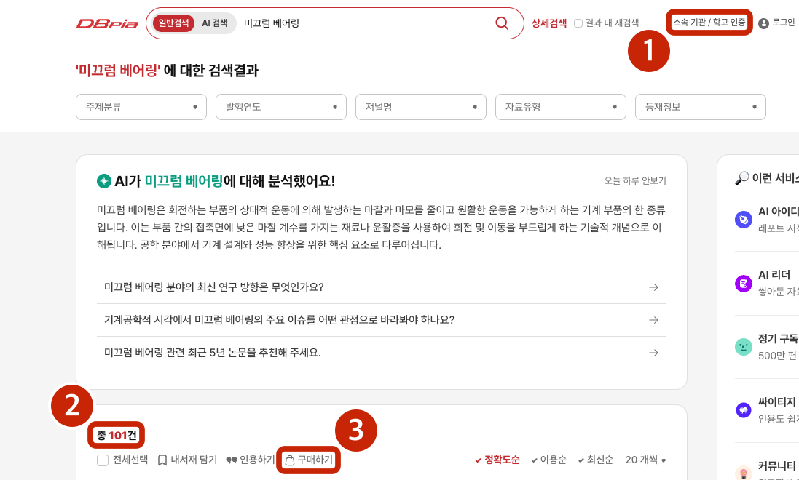
첨부 논문에서 실험 조건과 결과를 표로 추출하라.
조건: 시험 하중, 미끄럼 속도, 온도, 윤활 상태,
상대재 재질
결과: 측정 항목, 수치, 단위, 오차범위
논문에 명시되지 않은 항목은 "명시 없음"이라 적어라.
수치는 본문과 표에 있는 것만 쓰고
그래프에서 읽지 마라.| 축 | 값 | 근거 |
|---|---|---|
| 시험 하중 | 10 MPa | 표 2 |
| 미끄럼속도 | 0.05 m/s | 2.2절 |
| 온도 | 명시 없음 | — |
| 윤활 | 무윤활 | 2.1절 |
| 상대재 | S45C, Ra 0.4 | 표 1 |
| 마모율 | 1.2×10⁻⁶ mm³/N·m | 표 3 |
0.35 ± 0.04 통째로3.2 를 3.20 으로 안 씀MPa 와 N/mm² 는 같은 값이지만 환산하는 순간 오류가 끼어듦. 1일차·2일차와 같은 규칙임.3.2 면 3.20 으로 적지 않음 — 정밀도를 과장하는 것임. 오차범위를 함께 가져옴 — 0.35 ± 0.04 에서 뒤를 떼면 값이 확정된 것처럼 보임.| 축 | 논문 A (2019) | 논문 B (2021) | 논문 C (2023) |
|---|---|---|---|
| 시험 하중 | 10 MPa · 표 2 | 5~20 MPa · 표 1 | 15 MPa · 3.1절 |
| 미끄럼속도 | 0.05 m/s · 2.2절 | 0.1 m/s · 표 1 | 명시 없음 |
| 윤활 상태 | 무윤활 · 2.1절 | 그리스 · 2.3절 | 무윤활 · 3.1절 |
| 상대재 | S45C · 표 1 | SCM440 · 표 1 | 명시 없음 |
| 마모율 | 1.2×10⁻⁶ · 표 3 | 0.8×10⁻⁶ · 그림 4 | 2.1×10⁻⁶ · 표 2 |
5~20 MPa 범위가 한 칸에 뭉개지지 않음.doi.org/ 뒤에 붙여 열어 봄.[PDF] 공개본 3편 확보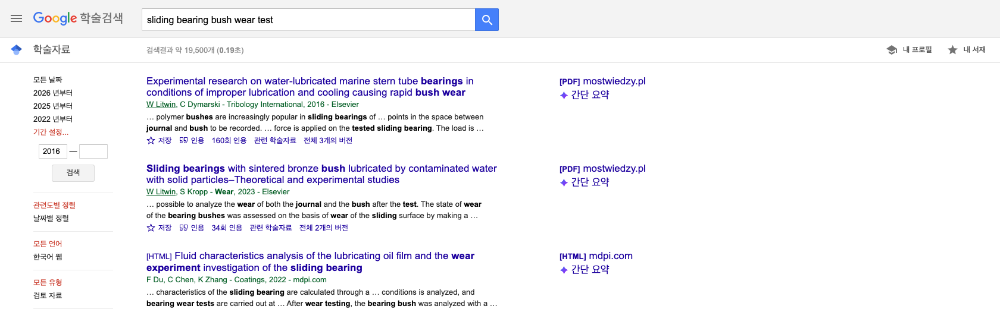
plain bearing bush wear 로 검색하고 왼쪽에서 연도를 좁힌 상태. 오른쪽[PDF] 가 붙은 것만 고름">첨부한 논문 3편에서 실험 조건과 결과를 하나의 표로 모아라.
행은 아래 축을 그대로 쓰고 열은 논문 3편으로 하라.
시험 하중 / 미끄럼 속도 / 온도 / 윤활 상태 / 상대재 재질 / 마모율 / 마찰계수
각 칸에 값과 근거(절 번호 또는 표 번호)를 함께 적어라.
논문에 명시되지 않은 항목은 "명시 없음" 이라 적어라.
수치는 본문과 표에 있는 것만 쓰고 그래프에서 읽지 마라.여러 자료를 한자리에 모으면 문서를 가로지르는 질문이 가능해짐. 혼자 읽을 때는 잘 보이지 않던 상충이 드러남.
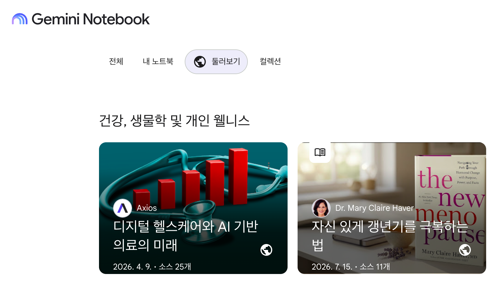
notebooklm.google.com 이었음. 지금은 notebook.google.com 임. 옛 주소를 쳐도 대개 넘어가지만, 사내망 허용 목록이 옛 주소만 등록돼 있으면 막힘.| 갈래 | 넣을 수 있는 것 | 한도와 조건 |
|---|---|---|
| 문서 | PDF · 텍스트 · 마크다운 · 워드 · PPT | 3일차 실습의 주력 |
| 스프레드 | 구글 시트 · CSV | 시트는 분량이 크면 잘림 |
| 웹 | 링크 주소 | 글자만 긁힘. 로그인·유료 벽은 안 됨 |
| 미디어 | 유튜브 링크 · 오디오 | 자막 있는 공개 영상만 |
| 소스 수 | 노트북 하나에 50개(무료 기준) | 요금제를 올리면 늘어남 |
| 소스 크기 | 하나당 50만 단어 또는 200MB | 요금제를 올려도 이 값은 그대로임 |
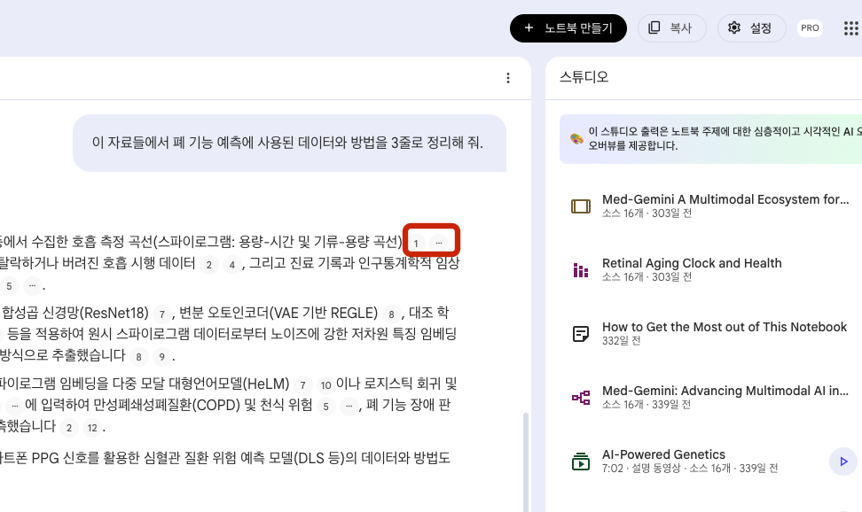
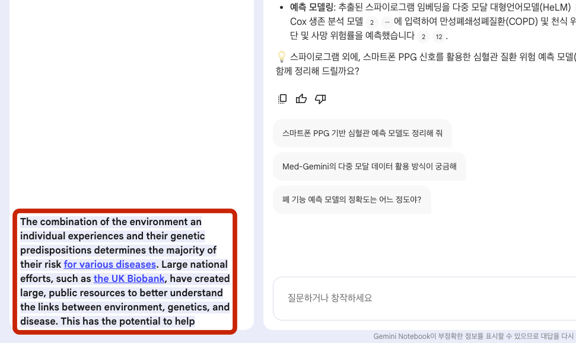
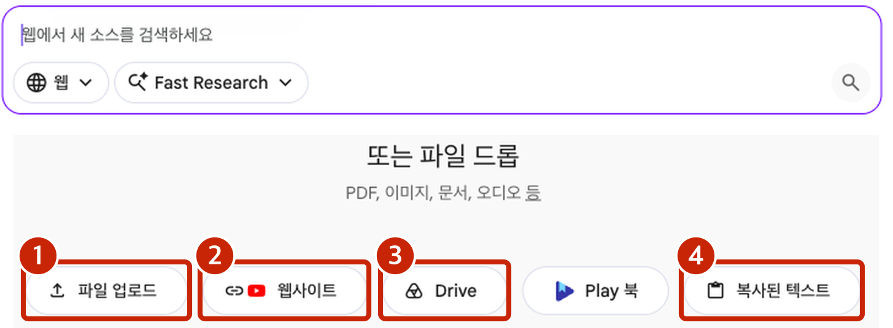
업로드한 자료 전체에서 "허용하중" 과 "미끄럼속도" 에 관한 서술을 모아라.
자료별로 어떤 값과 조건을 제시하는지 표로 정리하고,
서로 상충하는 부분이 있으면 표시하라.
근거 문장의 출처를 각 행에 함께 적어라.현장 데이터는 대개 지저분함. 측정자마다 입력 형식이 다르고, 빈 행과 메모가 섞이고, 단위가 열 제목에만 있거나 아예 없음.
25, 25.0, 25℃25℃ 를 25 로 바꾸는 것은 괜찮지만 2.5 를 25 로 바꾸면 사고임.첨부한 시험 데이터 엑셀을 정리하는 스크립트를 만들어 줘.
규칙: 온도 열에서 단위 문자를 떼고 숫자만 남긴다. 빈 행은 건너뛴다.
이상치는 지우지 말고 별도 열에 표시만 한다.
정리 전후 행 수를 화면에 찍어 줘.| 방식 | 이번 달 | 다음 달 | 규칙이 남는 곳 |
|---|---|---|---|
| ChatGPT 데이터 분석 | 표를 받음 | 다시 올리고 다시 설명함 | 대화 안 |
| Codex 스크립트 | 스크립트 + 표 | 파일만 바꿔 다시 돌림 | 파일 |
3-4_시험데이터.xlsx 처럼 이름을 바꿔 저장함. 원본을 덮어쓰지 않음.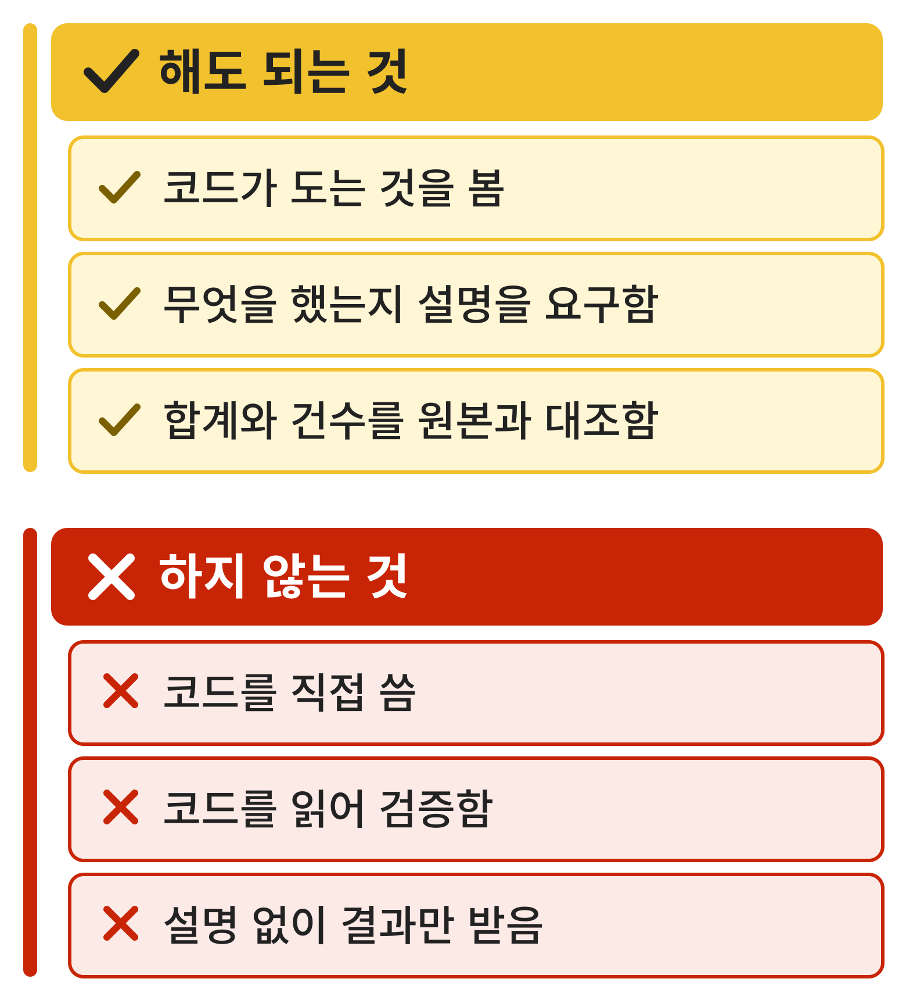
첨부 엑셀의 데이터 구조를 진단하라.
결측·중복·이상치·형식 불일치가 각각 몇 건인지 세고 예시를 보여라.
아직 고치지는 마라.| 진단 항목 | 건수 | 예시 | 정할 규칙 |
|---|---|---|---|
| 결측 | 3 | 온도 열 빈칸 | 그 행 제외, 건수 기록 |
| 중복 | 2 | 같은 시각 2행 | 뒤 행 제외 |
| 이상치 | 1 | 마모량 0.41 (평균 0.1) | 표시만, 삭제 금지 |
| 형식 불일치 | 5 | 25℃ · 25.0 | 숫자만 남김 |
정제된 데이터로 아래 그래프를 그려라.
1) 시간별 마모량 추이
(선그래프, 규격 상한선 표시)
2) 하중 조건별 분포 비교 (박스플롯)
축 제목에 단위를 반드시 표기하고,
데이터 건수를 그래프에 적어라.
한글 라벨이 깨지면 영문으로 대체하고
그 사실을 알려라.첨부 엑셀의 데이터 구조를 진단하라.
결측·중복·이상치·형식 불일치가 각각 몇 건인지 세고 예시를 보여라.
아직 고치지는 마라.
(진단을 확인한 뒤 규칙을 정해 이어서 지시한다)
위 규칙대로 정제하고 무엇을 몇 건 바꿨는지 표로 남겨라.
이상치는 삭제하지 말고 별도 열에 표시만 하라.
정제 전후 행 수를 함께 적어라.정제된 데이터로 아래 그래프를 그려라.
1) 시간별 마모량 추이 (선그래프, 규격 상한선 표시)
2) 하중 조건별 분포 비교 (박스플롯)
축 제목에 단위를 반드시 표기하고, 데이터 건수를 그래프에 적어라.
한글 라벨이 깨지면 영문으로 대체하고 그 사실을 알려라.
그린 그래프를 이미지 파일로 내려받을 수 있게 해라.| 산출물 | 만든 곳 | 다음에 쓰이는 곳 |
|---|---|---|
3-4_시험데이터.xlsx | P3-4-1 | 4-1 보고서 「결과」 절 |
| 그래프 이미지 2종 | P3-4-2 | 4-1 보고서 · 4-4 발표덱 |
3-1_대비표.md | P3-1-2 | 5-1 명세서 골격 |
| 논문 조건·결과 표 | P3-2-2 | 4-1 보고서 「고찰」 절 |
3일차는 찾고 읽고 모으고 정리했음. 4일차부터는 쓰는 시간임.
robots.txt·약관·유료 장벽·개인 계정. 기술이 되는 것과 해도 되는 것을 가르는 습관이 4일차부터의 「쓰는 일」에서 더 중요해짐.robots.txt 와 약관이 정함. 공식 API 가 있으면 그쪽이 먼저임.